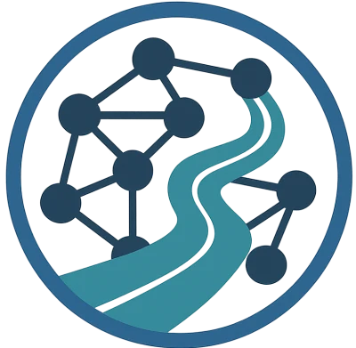
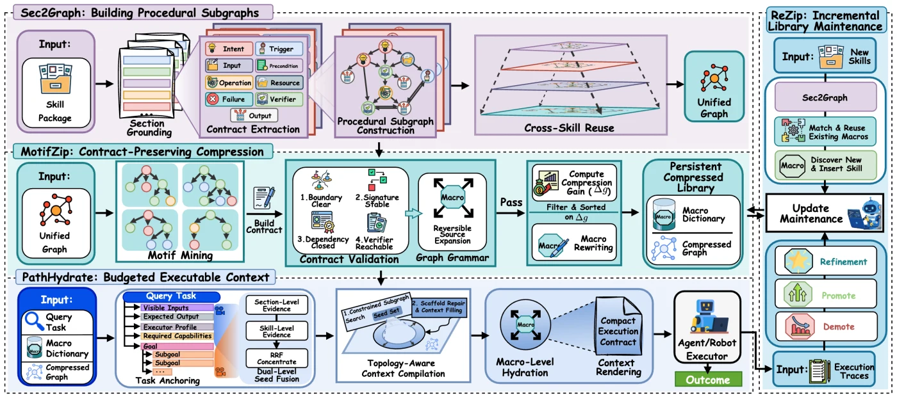
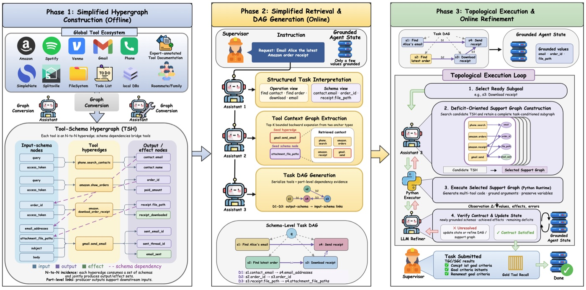
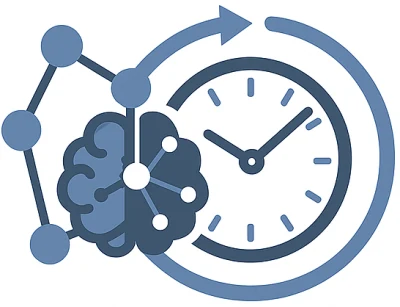
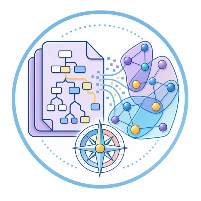
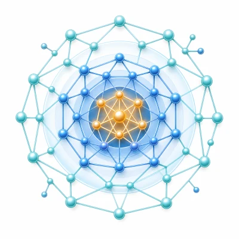

About Me
Hi there! 👋 I am Xingyu Tan (谭星雨), currently a Ph.D. candidate in the Data and Knowledge Research Group (DKR) at the School of Computer Science and Engineering, University of New South Wales (UNSW), and the Software Systems Research Group at Data61, Commonwealth Scientific and Industrial Research Organisation (CSIRO). I am fortunate to be jointly supervised by Dr. Xiaoyang Wang and Prof. Wenjie Zhang from UNSW, along with Dr. Qing Liu, Prof. Xiwei Xu, Dr. Xin Yuan, and Prof. Liming Zhu from CSIRO.
Previously, I completed both my Bachelor of Science (BSc.) in Computer Science and my Master of Philosophy (MPhil.) in Computer Science and Engineering at UNSW, under the supervision of Dr. Xiaoyang Wang and Prof. Wenjie Zhang.
 Former MLE & Research Intern at TikTok (Australia), worked on MLLMs and related research.
Former MLE & Research Intern at TikTok (Australia), worked on MLLMs and related research.
Research Interests
- Knowledge-Grounded and Structure-Aware LLM Reasoning: Incorporating graph structure, temporal knowledge, and cross-source evidence into retrieval and reasoning pipelines for faithful and interpretable language model reasoning.
- Memory, Belief Update, and Continual Reasoning for Language Agents: Building adaptive memory mechanisms and reusable reasoning structures to support long-horizon, evolving, and self-improving language agents.
- Long-Context, Multimodal, and Privacy-Aware Intelligent Systems: Developing efficient and trustworthy methods for reasoning over long documents, long videos, multimodal evidence, and privacy-sensitive external knowledge.
News
Selected Publications

Paths-over-GraphWWW 2025 HydraRAGEMNLP 2025
SkillZipPreprint 2026
HyperAgentPreprint 2026
MemoTimeWWW 2026 · Oral
DocTracePreprint 2026 PrivGemoPreprint 2026
Higher-Order PeakCIKM 2023Preprint 2026 · Scalable Agent Skill Libraries
SkillZip: Contract-Preserving Graph Compression for Scalable Agent Skill Libraries
Corresponding author


Professional Experience
Machine Learning Engineer (MLE) & Research Intern
Jan. 2026 - May 2026COMP9315 Database Systems Implementation
2025 - PresentZZSC9001 Foundations of Data Science
2023COMP9311 Database Systems
2023 - PresentCOMP9313 Big Data Management
2024CSIT115 Data Management and Security
2023Academic Service
Invited Journal Reviewer
- IEEE Transactions on Knowledge and Data Engineering (TKDE).
- ACM Transactions on Knowledge Discovery from Data (TKDD).
- Information Sciences.
- Knowledge-Based Systems.
Conference Service
- Session Chair, ACM The Web Conference (WWW): 2026.
- Volunteer, International Conference on Very Large Data Bases (VLDB): 2022.
Selected Initiatives
Honors & Awards
- School Nomination (Top-2), UNSW 3 Minute Thesis (3MT) Competition (2026)
- UNSW The Norman Foo Memorial Best Research Paper Prize (University Prize, 1 Recipient) (2026)
- UNSW Industry Engagement Grant (2025)
- WWW2025 Student Travel Award (2025)
- UNSW Development and Research Training Grant (2025 & 2026)
- CSIRO's Data61-UNSW Joint PhD Full Scholarship (2024-2028)
- CIRES-ADC Travel Grant (2023)
- UNSW Global University Award (2022)
- UNSW International Academic Excellence Award (2019)
Education
Ph.D. Candidate in Computer Science and Engineering

 UNSW & CSIRO's Data61, Sydney
UNSW & CSIRO's Data61, Sydney
M.Phil. in Computer Science and Engineering
 UNSW, Sydney
UNSW, Sydney
B.Sc. in Computer Science with Distinction
 UNSW, Sydney
UNSW, Sydney